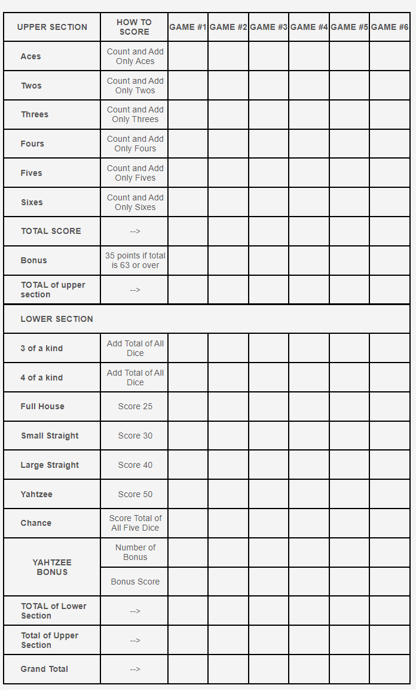
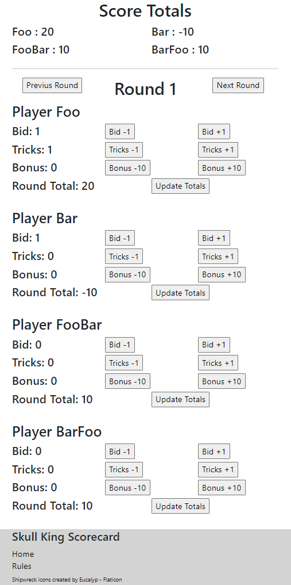

The first two projects are scorecards that can be used while playing Yahtzee and Skull King. Details on how each work and links to the scorecards can be found below.
Yahtzee Scorecard Skull King ScorecardThis is a digital version of the scoresheet that each player uses to keep track of their score while palying Yahtzee. The scorecard automates the tallying up of the upper and lower sections as well as the overall score.
This is an all vanilla HTML/CSS/JS project and the source code can be found on Github here.
Go To Scorecard The Skull King Scorecard is a digital version of the scoring sheet that comes with the card game Skull King. The scoresheets are setup so that typically one person is keeping score for all players which can be tricky and tedious given the various scoring rules in the game. This scorecard simplifies much of the process resulting in only the tricks, bids, and bonus points needing to be kept track of. The scoring rules are then applied automatically for each round. A total for each player is kept at the top as well for easy reference.
The Skull King Scorecard utilizes the React JS Library and the source code is available on Github here.
Go To Scorecard 